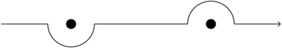

The Heisenberg picture and causality
Different pictures
Schrödinger picture
In the Schrödinger picture of the Klein-Gordon field, the state of the system at any one time \(t\) is described by a vector \(|\psi(t)\rangle\) in a Hilbert space. As time varies, the state vector evolves according to the Schrödinger equation: \[i\frac{d}{dt}|\psi(t)\rangle=H|\psi(t)\rangle,\] where \(H\) is the quantum Hamiltonian operator and we are working in units where \(\hbar=1\). The solution of this equation with initial state \(|\psi(0)\rangle\) is \[|\psi(t)\rangle=e^{-iHt}|\psi(0)\rangle,\] assuming the system is autonomous, that is the Hamiltonian has no time dependence.
The Heisenberg picture
The Heisenberg picture emphasises instead the operators \(A\) as dynamical objects which vary in time according to the Heisenberg equation \[\frac{d}{dt}A(t)=i[H,A(t)].\] If \(H\) is autonomous then a solution is given by \(A(t)=e^{iHt}A(0)e^{-iHt}\). Note that if \(|\psi(t)\rangle\) solves the Schrödinger equation and \(A(t)\) solves the Heisenberg equation, then \[\langle\psi(0)|A(t)|\psi(0)\rangle=\langle\psi(t)|A(0)|\psi(t)\rangle,\] so the two pictures are equivalent as far as computing expectation values is concerned.
Our favourite operators in the Heisenberg picture
For the Klein-Gordon system, the creation and annihilation operators, \(a_\mathbf{p}^\dagger\) and \(a_{\mathbf{p}}\), satisfy the following commutation relations with the Hamiltonian
\begin{align*} [H,a_{\mathbf{p}}]&=-\omega_{\mathbf{p}}a_{\mathbf{p}},\\ [H,a^{\dagger}_{\mathbf{p}}]&=\omega_{\mathbf{p}}a^{\dagger}_{\mathbf{p}}. \end{align*}The Heisenberg equation becomes
\begin{align*} \frac{d}{dt}a_{\mathbf{p}}(t)&=-i\omega_{\mathbf{p}}a_{\mathbf{p}},\\ \frac{d}{dt}a^{\dagger}_{\mathbf{p}}(t)&=-i\omega_{\mathbf{p}}a^{\dagger}_{\mathbf{p}} \end{align*}and the solutions are
\begin{align*} a_{\mathbf{p}}(t)&=e^{-i\omega_{mathbf{p}}}a_{\mathbf{p}}(0),\\ a^{\dagger}_{\mathbf{p}}(t)&=e^{-i\omega_{mathbf{p}}}a^{\dagger}_{\mathbf{p}}(0). \end{align*}The operators \(\phi(x)=\phi(\mathbf{x},t)\) and \(\pi(x)=\pi(\mathbf{x},t)\) are therefore given by
\begin{align*} \phi(x)&=\int\frac{d^3 p}{(2\pi)^3}\frac{1}{\sqrt{2\omega_{\mathbf{p}}}}\left(a_{\mathbf{p}}(0)e^{-ip\cdot x}+a^{\dagger}_{\mathbf{p}}(0)e^{ip\cdot x}\right)\\ \pi(x)&=-i\int\frac{d^3 p}{(2\pi)^3}\sqrt{\frac{\omega_{\mathbf{p}}}{2}}\left(a_{\mathbf{p}}(0)e^{-ip\cdot x}-a^{\dagger}_{\mathbf{p}}(0)e^{ip\cdot x}\right) \end{align*}where \(p=(\omega_{\mathbf{p}},\mathbf{p})\) and \(p\cdot x=\omega_{\mathbf{p}}t-\mathbf{p}\cdot\mathbf{x}\).
Causality
Recall that \[[a_{\mathbf{p}},a^{\dagger}_{\mathbf{q}}]=(2\pi)^3\delta(\mathbf{p}-\mathbf{q}).\] Using this commutation relation, we have
\begin{align*} [\phi(x),\phi(y)]&= \int\frac{d^3 p}{(2\pi)^3}\frac{1}{\sqrt{2\omega_{\mathbf{p}}}} \int\frac{d^3 q}{(2\pi)^3}\frac{1}{\sqrt{2\omega_{\mathbf{q}}}} \left([a_{\mathbf{p}},a^{\dagger}_{\mathbf{q}}]e^{iq\cdot y-p\cdot x} +[a^{\dagger}_{\mathbf{p}},a_{\mathbf{q}}]e^{ip\cdot x-q\cdot y}\right)\\ &=\int\frac{d^3 p}{(2\pi)^3}\frac{1}{2\omega_{\mathbf{p}}}\left(e^{ip\cdot(y-x)}-e^{ip\cdot(x-y)}\right)\\ &=D(x-y)-D(y-x), \end{align*}where we have defined \[D(z):=\int\frac{d^3 p}{(2\pi)^3}\frac{1}{2\omega_{\mathbf{p}}}e^{-ip\cdot z}.\] The function \(D(z)\) is Lorentz invariant (the integration measure \(d^3 p/2\omega_{\mathbf{p}}\) is the Lorentz invariant measure on the mass shell and the integrand \(e^{-ip\cdot z}\) is certainly Lorentz invariant). If \(x\) and \(y\) are spacelike separated (\((x-y)^2<0\)), then, after a Lorentz transformation, we can assume that they lie on the spacelike slice \(t=0\). In that case the integrals \(D(x-y)\) and \(D(y-x)\) are equal when we make the change of variables \(\mathbf{p}\to-\mathbf{p}\), so, if \((x-y)^2<0\) we get \[[\phi(x),\phi(y)]=0.\] The quantum Klein-Gordon field is therefore causal: local operators at spacelike separations commute.
Note that the amplitude \[\langle 0|\phi(x)\phi(y)|0\rangle\] for the process "particle is created at \(y\) and moves to \(x\) where it is destroyed" is equal to \(D(x-y)\). This is actually nonzero (exponentially decaying) outside the lightcone and oscillatory inside the lightcone. However, when \((x-y)^2<0\), this amplitude is cancelled by the process "particle is created at \(y\) and moves to \(x\) where it is destroyed", as the expectation value of the commutator \([\phi(x),\phi(y)]\) is zero.
The propagator
Consider the operators \(\phi(x)\) and \(\phi(y)\).
- The time-ordered product \(T\phi(x)\phi(y)\) is either \(\phi(x)\phi(y)\) or \(\phi(y)\phi(x)\) (if \(x^0>y^0\) or \(y^0\leq x^0\) respectively).
- The normal-ordered product \(:\phi(x)\phi(y):\) is the result of expressing \(\phi(x)\) and \(\phi(y)\) in terms of creation and annihilation operators, multiplying them together, and then, in each monomial built out of creation and annihilation operators, blithely moving all the creation operators to the left.
- Let \(\Delta_F(x-y)=\begin{cases}D(y-x)&\mbox{ if }x^0>y^0,\\D(x-y)&\mbox{ if }y^0\geq x^0\end{cases}\). This is called the Feynman propagator.
\[T\phi(x)\phi(y)=:\phi(x)\phi(y):+\Delta_F(x-y).\]
We have \[\phi(x)=\phi^+(x)+\phi^-(x)\] where
\begin{align*} \phi^+(x)&= \int\frac{d^3 p}{(2\pi)^3}\frac{1}{\sqrt{2\omega_{\mathbf{p}}}} a_{\mathbf{p}}e^{-ip\cdot x}\\ \phi^-(x)&= \int\frac{d^3 p}{(2\pi)^3}\frac{1}{\sqrt{2\omega_{\mathbf{p}}}} a^{\dagger}_{\mathbf{p}}e^{ip\cdot x}. \end{align*}If we assume that \(x^0>y^0\) then
\begin{align*} T\phi(x)\phi(y)&=\phi(x)\phi(y)\\ &=(\phi^+(x)+\phi^-(x))(\phi^+(y)+\phi^-(y))\\ &=\phi^+(x)\phi^+(y)+\phi^-(x)\phi^+(y) +\phi^+(x)\phi^-(y) +\phi^-(x)\phi^-(y). \end{align*}All of the terms here are normal-ordered except \(\phi^+(x)\phi^-(y)\). We have \[\phi^+(x)\phi^-(y)=[\phi^+(x),\phi^-(y)]+\phi^-(y)\phi^+(x).\] The term \(\phi^-(y)\phi^+(x)\) is normal-ordered; moreover, we have
\begin{align*} [\phi^+(x),\phi^-(y)]&= \int\frac{d^3 p}{(2\pi)^3}\frac{1}{\sqrt{2\omega_{\mathbf{p}}}} \int\frac{d^3 q}{(2\pi)^3}\frac{1}{\sqrt{2\omega_{\mathbf{q}}}} \left[a_{\mathbf{p}},a^{\dagger}_{\mathbf{q}}\right] e^{i(q\cdot y-p\cdot x)}\\ &=\int\frac{d^3 p}{(2\pi)^3}\frac{1}{\sqrt{2\omega_{\mathbf{p}}}} \int\frac{d^3 q}{(2\pi)^3}\frac{1}{\sqrt{2\omega_{\mathbf{q}}}} (2\pi)^3\delta(\mathbf{p}-\mathbf{q})\\ &=\int\frac{d^3 p}{(2\pi)^3}\frac{1}{2\omega_{\mathbf{p}}}e^{ip\cdot(y-x)}\\ &=D(y-x). \end{align*}A similar calculation when \(y^0\geq x^0\) gives \(D(x-y)\).
The Feynman propagator can be written as \[\Delta_F(z)=\int\frac{d^3 p}{(2\pi)^3}\int_C\frac{dp^0}{2\pi}\frac{ie^{-ip\cdot z}}{p^2-m^2},\] where the \(p^0\)-integral is taken along the following contour \(C\) in the complex \(p^0\)-plane:

where the two dots indicate the poles \(p^0=\pm\omega_{\mathbf{p}}\).
If \(x^0>y^0\) then we can close the contour \(C\) with a "semicircle at infinity" in the lower half \(p^0\)-plane, \(p^0\sim Re^{i\theta}\) for large \(R\), as the factor \(e^{-ip^0(x^0-y^0)}\) in the integrand will tend to zero along this semicircle. The value of the line integral along \(C\) is therefore equal to the sum of residues of the integrand in the region of the plane below \(C\), in other words, the residue of the integrand at \(p^0=\omega_{\mathbf{p}}\). This is \(1/2\omega_\mathbf{p}\), giving \[\int\frac{d^3 p}{(2\pi)^3}\int_C\frac{dp^0}{2\pi}\frac{ie^{-ip\cdot z}}{p^2-m^2}=D(y-x)\] when \(x^0>y^0\). Similarly, if \(x^0\leq y^0\) then we can close the contour in the upper half \(p^0\)-plane and we obtain \[\int\frac{d^3 p}{(2\pi)^3}\int_C\frac{dp^0}{2\pi}\frac{ie^{-ip\cdot z}}{p^2-m^2}=D(x-y).\]
The integral in the lemma is often written as \[\Delta_F(z)=\int\frac{d^4 p}{(2\pi)^4}\frac{ie^{-ip\cdot z}}{p^2-m^2+i\epsilon},\] as the poles of this integrand are at \(p^0=\pm\sqrt{m^2+|\mathbf{p}|^2-i\epsilon}\), which are slightly above/below the real axis. We may send \(\epsilon\to 0\) and deform the real axis to the contour \(C\) without crossing the poles to recover the original integral.